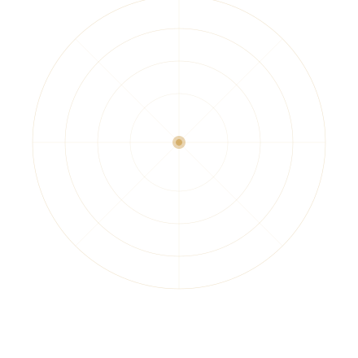

Klang · Heilung · StilleSound · Healing · Stillness
✨ Naya (नय)
Naya – verwurzelt im Sanskrit und Arabischen – trägt Bedeutungen wie innere Weisheit, Führung, Atem und heiliger Klang. So wie der Klang den Körper in Resonanz bringt, ist Naya eine Einladung: zurück zu deinem eigenen Rhythmus, zu deiner Körperweisheit, zu dem, was in dir bereits wohnt. Naya – rooted in Sanskrit and Arabic – carries meanings such as inner wisdom, guidance, breath and sacred sound. Just as sound brings the body into resonance, Naya is an invitation: back to your own rhythm, to your body's wisdom, to what already lives within you.
Jana Christina Staubli
Was ist Sound Healing?What is Sound Healing?
Stell dir vor, du legst dich einfach hin – und der Klang übernimmt. Tibetische Klangschalen erzeugen sanfte Töne und Vibrationen, die sich wie Wellen durch deinen Körper bewegen. Du musst nichts tun, nichts denken, nichts leisten. Der Klang findet seinen Weg.
Imagine simply lying down – and letting the sound take over. Tibetan singing bowls create gentle tones and vibrations that move through your body like waves. You don't need to do anything, think anything, or achieve anything. The sound finds its way.
Die Schwingungen wirken direkt auf dein Nervensystem: Puls und Atmung verlangsamen sich, Anspannung löst sich, und dein Körper gleitet in einen Zustand tiefer Ruhe – ähnlich wie in einer tiefen Meditation. In diesem Zustand kann sich dein Körper erholen, regenerieren und neu ausrichten.
The vibrations act directly on your nervous system: pulse and breathing slow down, tension releases, and your body glides into a state of deep rest – similar to deep meditation. In this state, your body can recover, regenerate and realign itself.
Gleichzeitig regen die Vibrationen die Durchblutung an und unterstützen den Körper dabei, sich selbst zu reinigen. Die sanften Wellen erreichen jeden Winkel – von den Organen bis zu den Zellen. Viele Menschen spüren nach einer Sitzung eine wohltuende Leichtigkeit, innere Stille und ein tiefes Gefühl von Ankommen.
At the same time, the vibrations stimulate circulation and support the body in cleansing itself. The gentle waves reach every corner – from the organs to the cells. Many people feel a soothing lightness, inner stillness and a deep sense of arrival after a session.
Wissenschaftliche Studien belegen, dass regelmässiges Sound Healing messbare Wirkung zeigt: weniger Stress und Angst, besserer Schlaf, reduzierte Schmerzwahrnehmung und ein gestärktes Immunsystem. Je regelmässiger die Praxis, desto nachhaltiger die Wirkung – der Körper lernt, schneller in diesen Zustand tiefer Ruhe zu finden.
Scientific studies confirm that regular sound healing has measurable effects: reduced stress and anxiety, improved sleep, decreased pain perception and a strengthened immune system. The more regular the practice, the more lasting the benefits – the body learns to find this state of deep rest more easily over time.
💧 Tipp: Trinke am Tag einer Klangschalen-Sitzung mindestens 2 Liter Wasser oder Tee – die Vibrationen unterstützen deinen Körper beim Ausleiten.
💧 Tip: Drink at least 2 litres of water or herbal tea on the day of your session – the vibrations support your body in releasing what it no longer needs.
Über JanaAbout Jana
Ich bin Jana – Yogalehrerin, ausgebildete Klangpraktikerin und Sozialarbeiterin (BSc.). Mit offenem Herzen und professioneller Präsenz halte ich Räume, in denen tiefe Entspannung, Verbindung zu deinem Körper und echtes Innehalten möglich werden.
I'm Jana – yoga teacher, trained sound practitioner and social worker (BSc.). With an open heart and professional presence, I hold spaces where deep relaxation, connection to your body and genuine stillness become possible.
Ich begleite Menschen mit Freude, Offenheit und Empathie – feinfühlig und klar zugleich. Meine Praxis verbindet tibetische Klangheilung, Nada Yoga, Atemarbeit und körperorientierte Methoden. Mein Hintergrund in der Sozialen Arbeit fliesst dabei tief in meine Arbeit ein – jeder Mensch wird bei mir so empfangen, wie er ist.
I accompany people with joy, openness and empathy – sensitive and clear at the same time. My practice combines Tibetan sound healing, Nada Yoga, breathwork and body-oriented methods. My background in social work flows deeply into how I work – every person is received exactly as they are.
Meine Reise führte mich durch Lateinamerika und die letzten drei Jahre vorwiegend durch Asien – Indien, Nepal, Thailand und Sri Lanka, mit dem Schwerpunkt in Indien. Ich lebte, lernte und praktizierte in verschiedenen Kulturen und Traditionen, begegnete unterschiedlichsten Menschen und Formen des Heilens. Diese Erfahrungen haben meine Praxis zutiefst geprägt. Zurück in der Schweiz freue ich mich, das, was ich unterwegs erfahren und gelernt habe, weiterzugeben – in Einzelsitzungen ebenso wie in Gruppen und Klangreisen.
My journey took me through Latin America and, for the past three years, primarily through Asia – India, Nepal, Thailand and Sri Lanka, with most of my time spent in India. I lived, learned and practised within different cultures and traditions, encountering diverse people and forms of healing. These experiences have profoundly shaped my practice. Back in Switzerland, I look forward to sharing what I have experienced and learned along the way – in individual sessions as well as in groups and sound journeys.
Ausbildung & ZertifikateTraining & Certificates
Yoga Alliance
RYT 200 · YACEP Certified
DiplomeCertificates
Zum AnschauenView all
Meine AngeboteMy Offerings
🌀
Tief entspannende Klangreise mit tibetischen Klangschalen. Du liegst einfach da – der Klang übernimmt und führt dein Nervensystem in tiefe Ruhe.
A deeply relaxing sound journey with Tibetan singing bowls. You simply lie down – the sound takes over and guides your nervous system into deep rest.
🌙
Passive, meditative Yogapraxis unterstützt von Klangschalen. Halte, atme, lass los – der Klang begleitet dich in jede Tiefe.
Passive, meditative yoga practice supported by healing tones. Hold, breathe, release – sound accompanies you into every depth.
💤
Geführte Tiefenentspannung am Rand von Schlaf und Bewusstsein – begleitet von intuitiven Klanglandschaften. Tiefste Regeneration ohne Anstrengung.
Guided deep rest at the threshold of sleep and awareness – accompanied by intuitive soundscapes. Profound regeneration without effort.
🎶
Eine ganzheitliche Praxis, die inneren und äusseren Klang mit Atem, Asana und Klangreise verbindet. Musik als Weg nach innen.
A holistic practice that combines inner and outer sound with breath, asana and sound bath. Music as a path inward.
🌕
Vollmond, Herzöffnung, Loslassen, Grounding, Chakra-Balancing – geführte Kreise mit Klang, Intention und gemeinschaftlicher Stille. Auch Women's Circles.
Full Moon, Heart Opening, Letting Go, Grounding, Chakra Balancing – guided circles with sound, intention and communal stillness. Women's Circles also available.
✨
Persönliche Einzelbegleitung – individuell auf dich abgestimmt. Klang, Körper, Atem, Präsenz. Für dich, in deinem Tempo.
Personal one-to-one accompaniment – tailored entirely to you. Sound, body, breath, presence. For you, at your own pace.
EinblickeGallery
StimmenVoices
«Jana konnte die Sitzung so anpassen, dass ich in tiefe Entspannung und inneren Frieden fand. Die Wirkung hielt den ganzen Tag an. Ich empfehle Jana wärmstens, wenn du ein wirklich einzigartiges und individuelles Erlebnis suchst.»
«Jana was able to customize the session effectively that led to deep relaxation and a sense of peace. The effects lasted throughout the day. I highly recommend Jana if you are looking for a truly unique and individualized experience.»
Pai, 2026
«Jana hat eine besondere Gabe, Raum zu halten. Die Stille nach dem Klang war das Schönste.»
«Jana has a special gift for holding space. The silence after the sound was the most beautiful part.»
Bern
«Ich habe zum ersten Mal seit Jahren wirklich losgelassen. Eine unvergessliche Erfahrung.»
«For the first time in years I truly let go. An unforgettable experience.»
Basel
«Das Sound Healing war tief entspannend. Jana hat mit viel Herzlichkeit und Ruhe eine Atmosphäre geschaffen, in der ich mich rundum wohlgefühlt habe. Perfekt, um abzuschalten und neue Energie zu tanken.»
«The sound healing was deeply relaxing. Jana created an atmosphere with so much warmth and calm that I felt completely at ease. Perfect for switching off and recharging.»
Soundbad Bern, 2024
«Jeder Mensch trägt seinen eigenen Klang in sich – ich helfe dir, ihn wieder zu hören.»
«Every person carries their own sound within – I help you hear it again.»
Sound Healing ist keine Methode, sondern eine Einladung. Eine Einladung, innezuhalten, zu spüren und zurückzukehren zu dem, was wesentlich ist.
Sound healing is not a method, but an invitation. An invitation to pause, to feel and return to what is essential.

KontaktContact
Ich freue mich auf deine Nachricht. Schreib mir einfach und wir finden gemeinsam das passende Angebot für dich.
I look forward to hearing from you. Simply write to me and we'll find the right offering together.
naya.vibrations@mail.chSchweiz · Online weltweitSwitzerland · Online worldwide